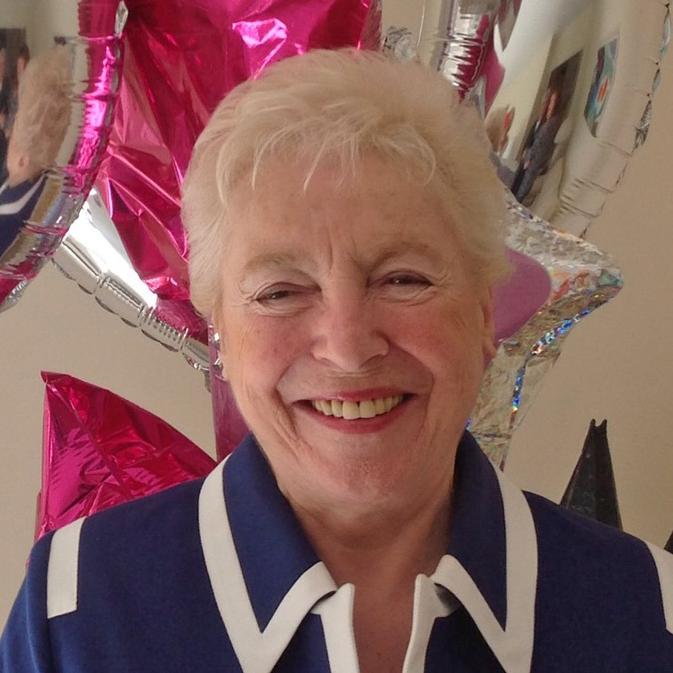

À frente do seu tempo

Dame Stephanie “Steve” Shirley, nasceu em 16 de setembro de 1933, é uma pioneira na Tecnologia da Informação, mulher de negócios e filantropa. Com 5 anos de idade chegou, como criança refugiada, ao Reino Unido, onde foi adotada
. Stephanie se formou com honras em Matemática, trabalhou no Posto Office Research Station construindo computadores do zero e escrevendo código em linguagem de máquina. Em 1959 foi trabalhar na CDL Ltd, que é responsável pelo design do computador ICT 1301.